Rodix es una app para controlar los vehículos de la empresa desde el celular: te avisa cuándo vencen la VTV, el seguro y otros papeles, guarda los services con sus gastos y, en las ambulancias, ayuda a revisar todos los días que estén los insumos (jeringas, gasas, oxígeno, etc.).
👤 Dueño de la flota
Carga vehículos, documentos y services. Ve las alertas. Invita y quita choferes. Arma el checklist de insumos.
🚐 Chofer
Ve los vehículos de la flota y revisa y tilda los insumos de la ambulancia. No puede editar ni borrar nada.
Funciona sin internet. Si te quedás sin señal, lo que cargues se guarda en el teléfono y se sube solo cuando vuelve la conexión.
2 Instalar la app desde el link
Rodix no se baja de la Play Store ni de la App Store. Se instala directo desde el link que te enviaron, en menos de un minuto.
Importante: si el link te llegó por WhatsApp, al tocarlo se puede abrir dentro de WhatsApp. Tocá los 3 puntitos ⋮ de arriba a la derecha y elegí «Abrir en Chrome» (Android) o «Abrir en Safari» (iPhone). Si no, la app no se puede instalar ni entrar con Google.
📱 Si tenés Android (Samsung, Motorola, Xiaomi…)
1
Abrí el link en Chrome
2
Tocá los 3 puntitos ⋮
Están arriba a la derecha.
3
Tocá «Instalar aplicación»
En algunos teléfonos dice «Agregar a la pantalla principal». Confirmá con «Instalar».
4
Buscá el ícono de Rodix
Aparece en tu pantalla, como cualquier otra app. Ya podés abrirla desde ahí.
🍎 Si tenés iPhone
1
Abrí el link en Safari
Tiene que ser Safari (la brújula azul), no Chrome.
2
Tocá el botón «Compartir»
Es el cuadradito con una flecha hacia arriba, abajo en el centro.
3
Bajá y tocá «Agregar a inicio»
Después tocá «Agregar» arriba a la derecha.
4
Abrí Rodix desde su ícono
Quedó en tu pantalla de inicio.
3 Crear tu cuenta y entrar
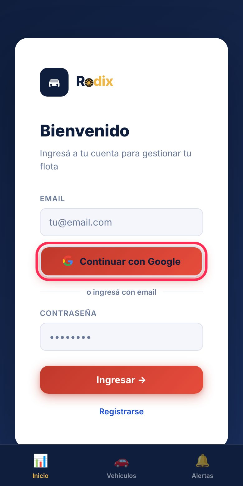
Pantalla de entrada
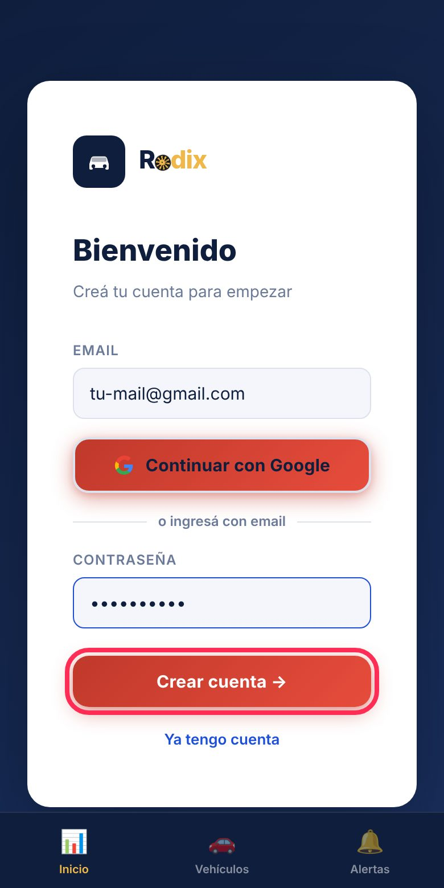
Crear cuenta nueva
Si sos dueño de flota
1
Tocá «Registrarse»
2
Escribí tu email y una clave
Elegí una clave que recuerdes: la app no tiene botón de «olvidé mi clave». Anotala en un lugar seguro. También podés entrar con el botón de Google.
3
Tocá «Crear cuenta»
Cuenta de prueba: la cuenta nueva empieza en modo demo de 24 horas. Para seguir usándola, escribinos a ventas@raventechsapp.com y te la activamos.
Si sos chofer
No te registres por tu cuenta: usá el link de invitación que te mandó el dueño (mirá la parte 9). Así entrás directo a la flota, sin demo.
4 Conocer las pantallas
Abajo hay 3 botones que siempre están a mano:
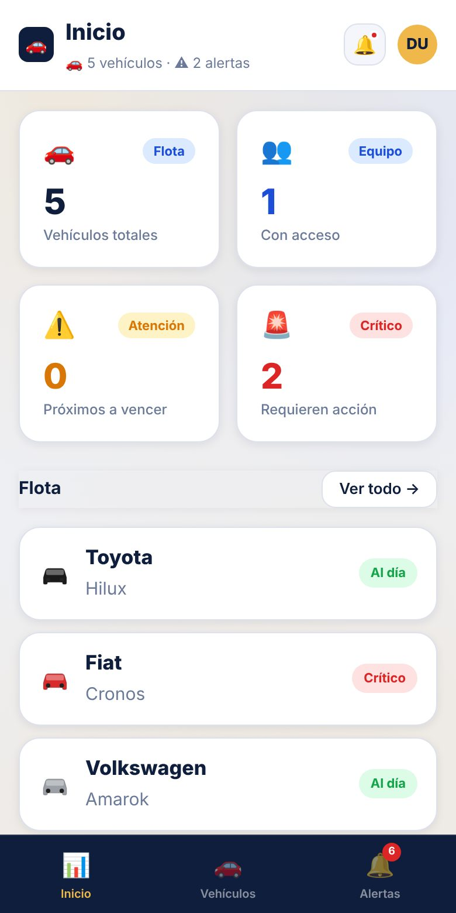
INICIO: resumen de la flota y estado de cada vehículo
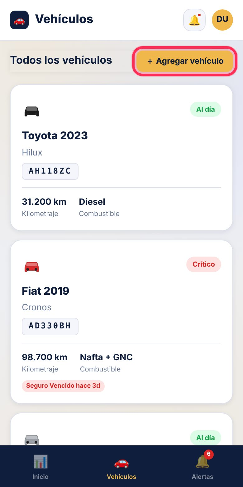
VEHÍCULOS: la lista completa y el botón para agregar
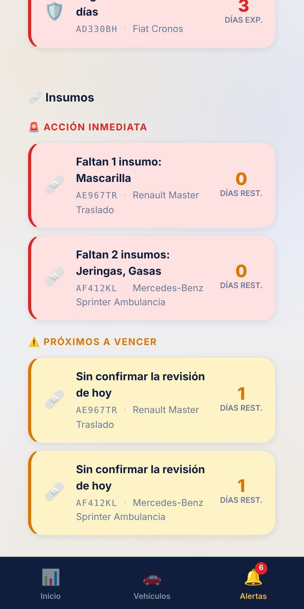
ALERTAS: lo que vence o falta
Arriba a la derecha está tu círculo con tus iniciales. Tocándolo ves tu email, «Mi equipo» (si tu plan lo incluye) y «Cerrar sesión».
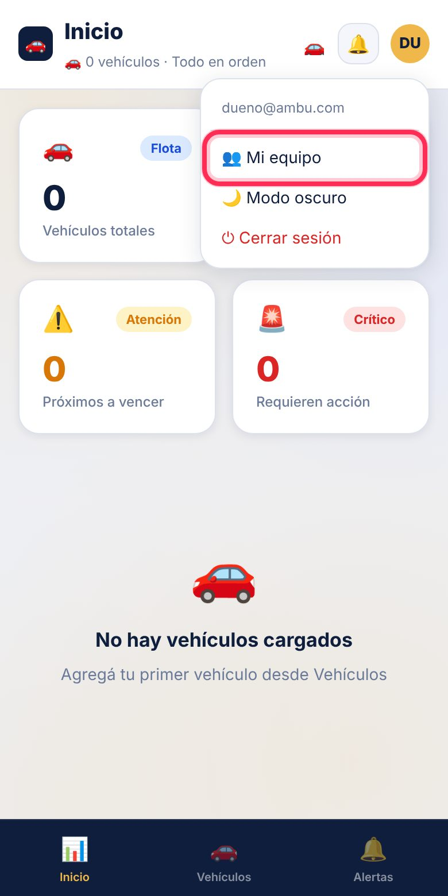
El menú del círculo de iniciales: acá está «Mi equipo»
5 Cargar vehículos, documentos y services
Agregar un vehículo
1
Entrá a «Vehículos» y tocá «+ Agregar vehículo»
2
Completá marca, modelo, patente y kilometraje
Con eso alcanza. El resto es opcional.
3
Tocá «Guardar»
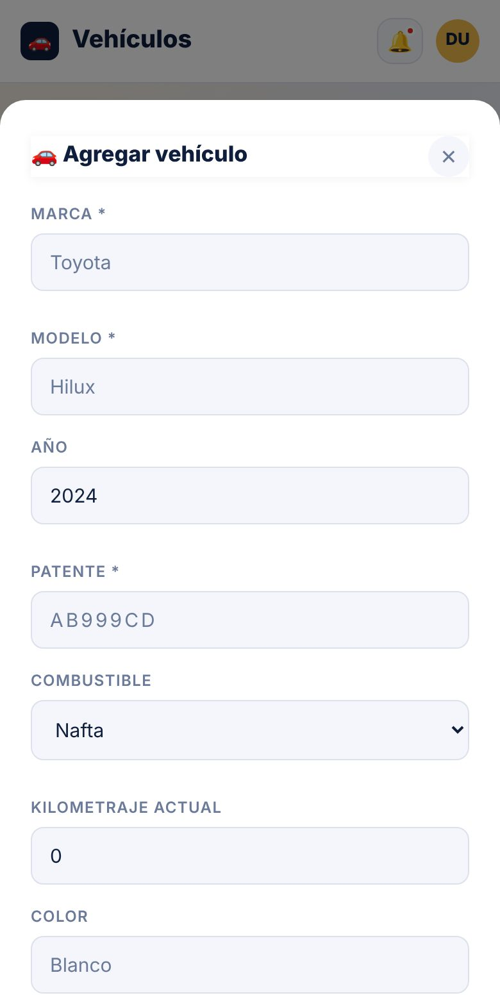
Formulario para agregar un vehículo
Cada plan tiene un límite de vehículos. Si llegás al límite, la app te lo avisa: escribinos y lo ampliamos.
Cargar un documento (VTV, seguro, oblea de GNC, patente…)
1
Tocá el vehículo para ver su ficha
2
Tocá «+ Documento»
3
Elegí el tipo y poné la fecha de vencimiento
La app te avisa antes de que venza.
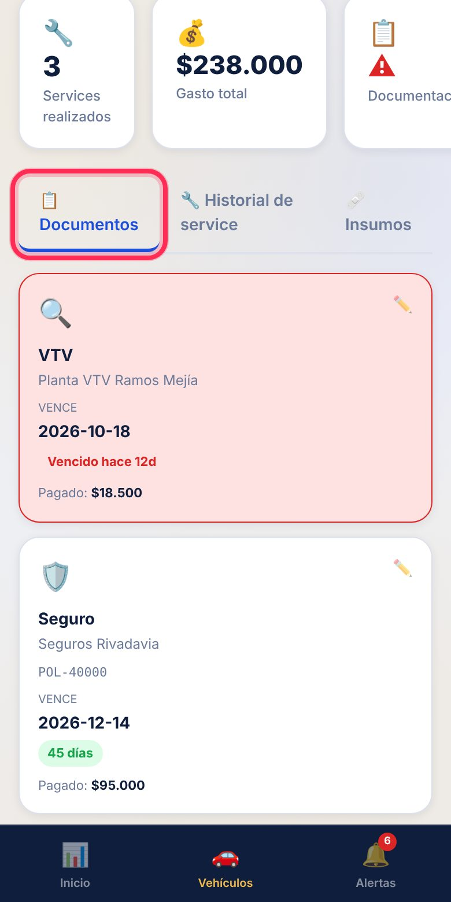
Ficha del vehículo
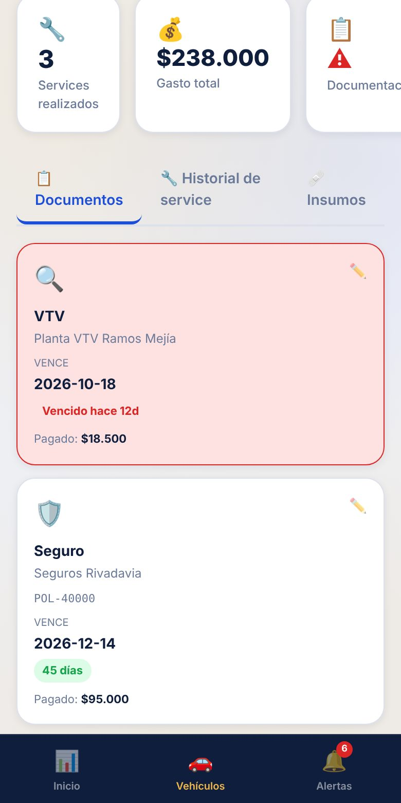
Pestaña «Documentos»
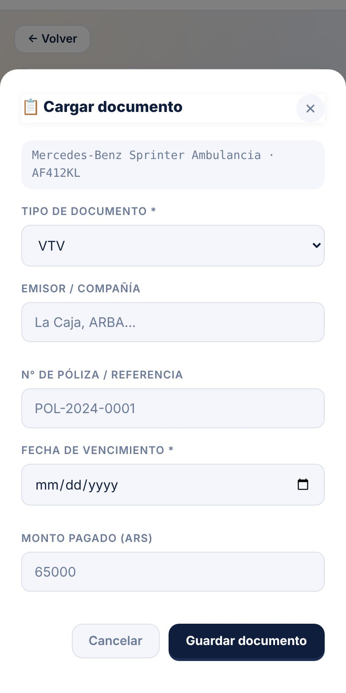
Cargar un documento
Registrar un service o arreglo
1
En la ficha tocá «+ Service»
2
Elegí el tipo (cambio de aceite, frenos, cubiertas…)
Poné fecha, kilómetros, taller y costo. La app suma el gasto total del vehículo.
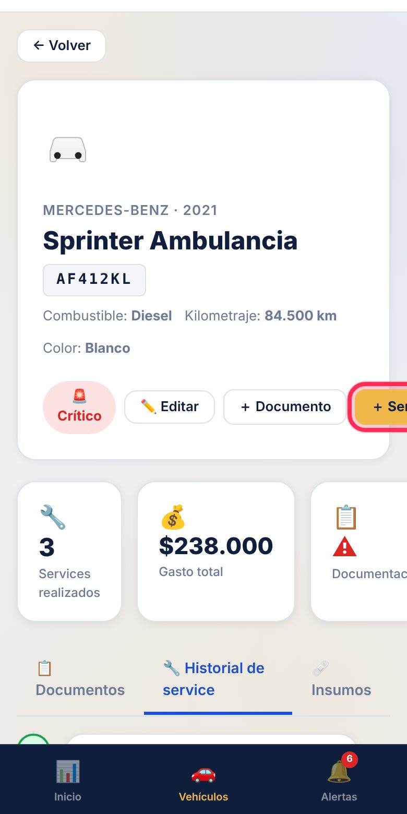
Historial de services
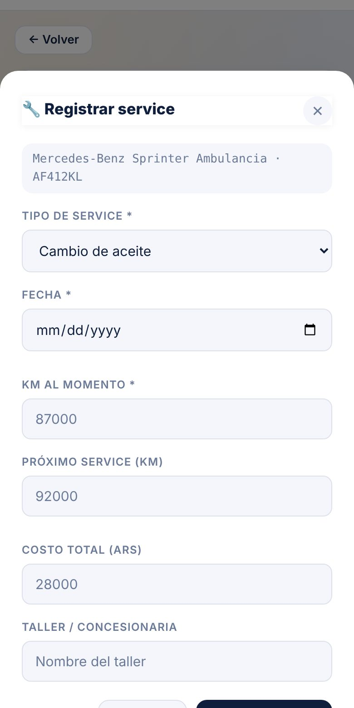
Registrar un service
El estado de cada vehículo se ve con colores:
Al díaAtención (vence pronto)Crítico (vencido)
6 Alertas
En la campanita 🔔 y en el botón Alertas ves lo que necesita atención, ordenado por urgencia:
Acción inmediata: ya venció algo o falta un insumo.
Próximos a vencer: falta poco; conviene renovar.
Insumos: faltan elementos en una ambulancia o no se hizo la revisión de hoy.
Tocá una alerta para ir directo al vehículo.
7 Checklist de insumos (ambulancias)
Esta función se habilita según tu plan. Si no ves la pestaña «Insumos» en la ficha del vehículo, escribinos a ventas@raventechsapp.com.
Armar la lista (dueño)
1
Entrá a la ficha de la ambulancia y tocá la pestaña «Insumos»
2
Tocá «＋ Crear checklist (plantilla)»
La app carga una lista base: jeringas, bisoprolol, jarabe, tubo de oxígeno, mascarilla, gasas y vendas.
3
Ajustá la lista
Con «+ Agregar ítem» sumás elementos; con ✏️ cambiás nombre o cantidad; con 🗑 borrás un ítem de la lista.
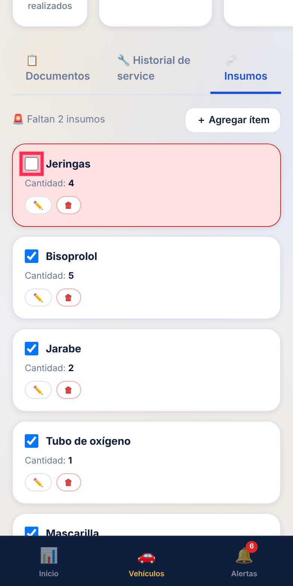
Lista de insumos. Los ítems en rojo son los que faltan
Cómo se usa todos los días
1
Revisá la ambulancia
Mirá cada elemento de la lista.
2
Destildá lo que falta
El casillero ✅ significa «está». Si lo destildás, el ítem se pone rojo y se genera una alerta para el dueño.
3
Tocá «Confirmar revisión de hoy»
Queda registrado quién la hizo y a qué hora. Se confirma una vez por día y por vehículo.
8 Invitar a un chofer (paso a paso)
Esto lo hace el dueño. Cada link sirve una sola vez y para una sola persona.
1
Tocá tu círculo de iniciales (arriba a la derecha)
2
Tocá «Mi equipo»
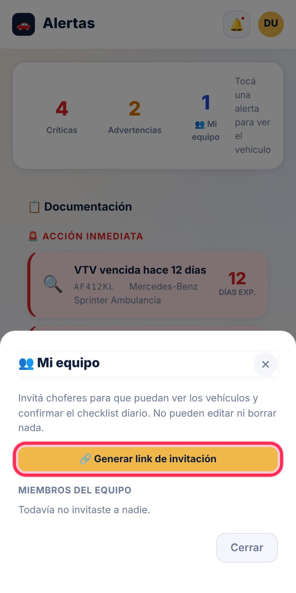
Ventana «Mi equipo»
3
Tocá «Generar link de invitación»
4
Enviáselo al chofer
Tocá «WhatsApp» para mandarlo directo, o «Copiar» para pegarlo donde quieras.
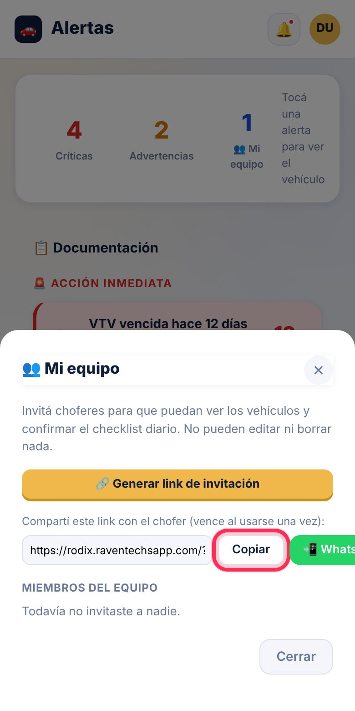
Link generado: «Copiar» o «WhatsApp»
Más cosas que podés hacer
Ver quién está en tu equipo: abajo, en «Miembros del equipo».
Quitar a un chofer: tocá «Quitar» al lado de su email y confirmá. Deja de ver los vehículos. No se borra ningún dato.
Si el chofer no puede entrar, generá un link nuevo (el anterior ya no sirve si se usó).
Cuidá el link: quien lo abra primero se une a tu flota. Mandalo solo a la persona indicada.
9 Si sos chofer: tu día a día
La primera vez
1
Abrí el link que te mandó el dueño
Si te abre dentro de WhatsApp, tocá ⋮ y «Abrir en Chrome» (o Safari en iPhone). Instalá la app (parte 2).
2
Tocá «Registrarse», poné tu email y una clave, y «Crear cuenta»
Anotá tu clave: no hay botón para recuperarla.
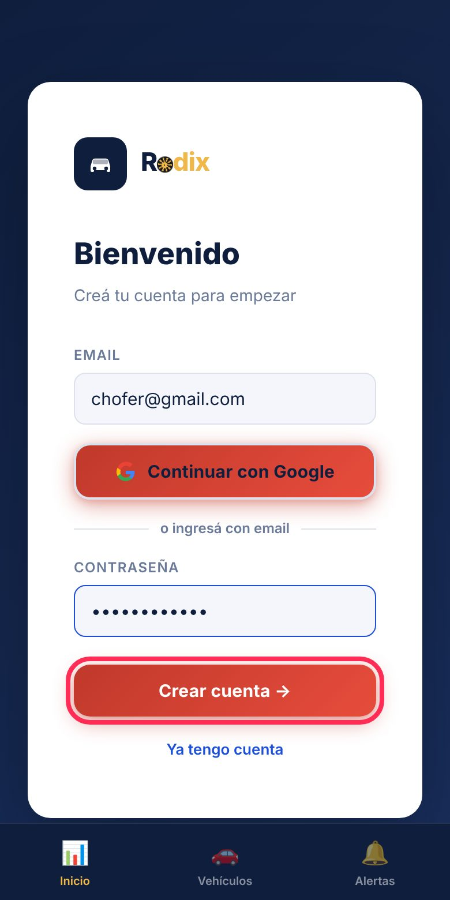
Registro del chofer desde el link de invitación
Si todo salió bien, aparece el mensaje «Te uniste a la flota correctamente» y ya ves los vehículos.
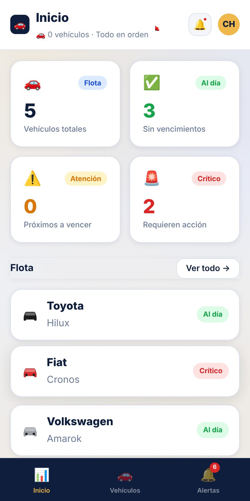
Inicio del chofer: solo ve los insumos
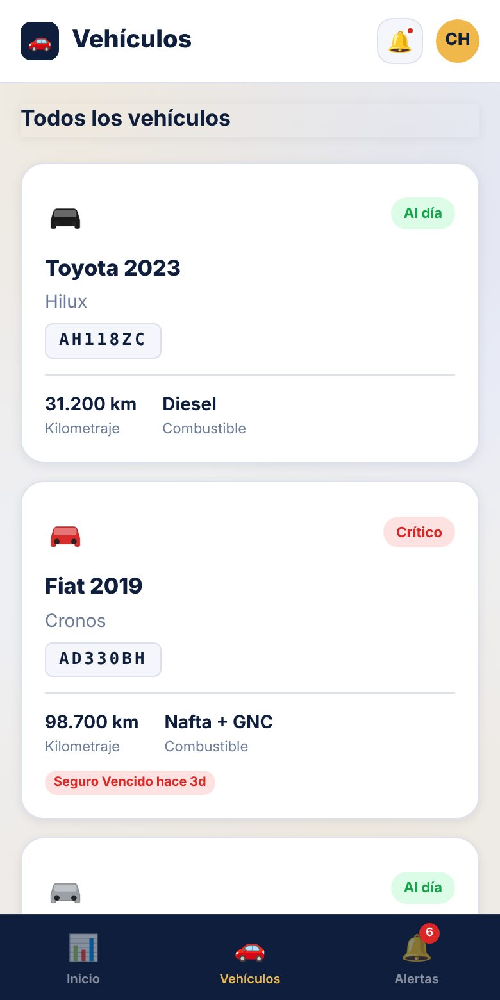
Lista de vehículos de la flota
Todos los días
1
Entrá a «Vehículos» y elegí la ambulancia
2
Revisá los insumos y destildá los que faltan
3
Tocá «Confirmar revisión de hoy»
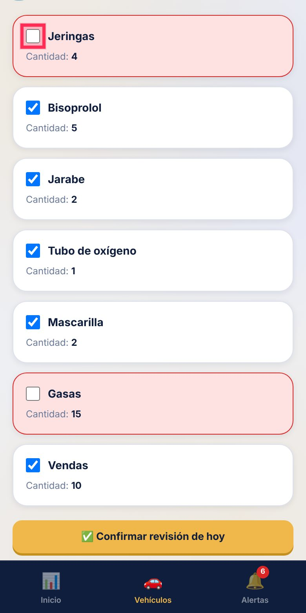
Casillero ✅ = está / vacío = falta
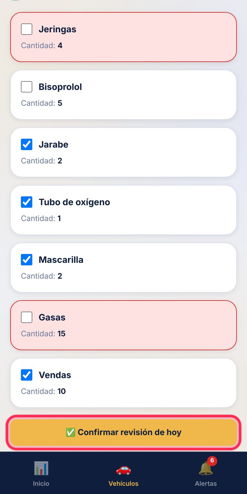
Al terminar: «Confirmar revisión de hoy»
Como chofer no podés editar ni borrar vehículos, documentos ni services: eso lo hace solo el dueño.
10 Preguntas frecuentes
El link dice que «ya fue usado»
Cada link sirve una sola vez. Pedile al dueño que genere uno nuevo en «Mi equipo».
No veo la opción «Mi equipo»
Aparece solo si tu plan incluye equipo y vos sos el dueño. Los choferes no la ven. Escribinos a ventas@raventechsapp.com.
No veo la pestaña «Insumos»
El checklist se habilita según el plan. Si tu plan lo incluye y no aparece, avisanos.
No puedo entrar con Google desde el link de WhatsApp
Abrí el link en Chrome o Safari (no dentro de WhatsApp). Si sigue sin andar, registrate con email y clave.
Se me olvidó la clave
La app todavía no tiene recuperación automática. Escribinos a ventas@raventechsapp.com y te ayudamos.
Me quedé sin internet, ¿pierdo lo que cargué?
No. Se guarda en el teléfono y se sube solo cuando vuelve la señal. Arriba aparece el aviso «Sin conexión».
Dice «Tu demo de 24hs terminó»
Tu cuenta de prueba venció. Escribinos y la activamos; tus datos siguen guardados.
¿Cómo cierro sesión?
Tocá tu círculo de iniciales y elegí «Cerrar sesión».